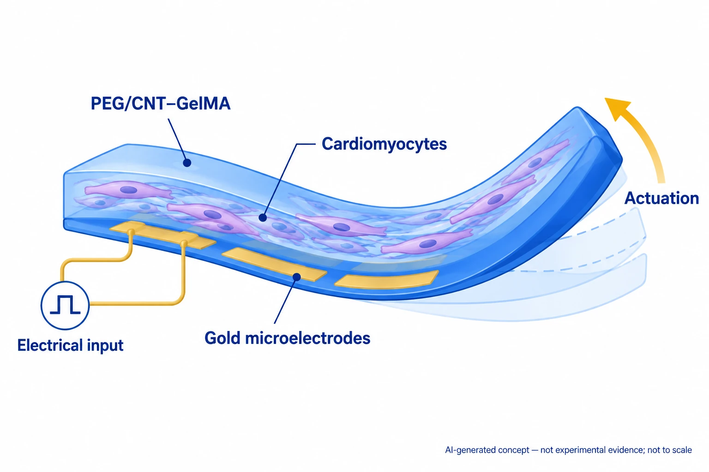

The question behind this study
A ray-inspired soft robot combines cardiomyocytes, patterned hydrogels and gold microelectrodes. The electrodes provide mechanical support and local electrical stimulation for cell-driven actuation.
What the study shows
PEG/CNT–GelMA layers and gold microelectrodes form a cardiomyocyte-driven ray-like robot.
Microelectrodes combine mechanical support with local electrical stimulation. This in vitro actuator used neonatal rat cardiomyocytes and did not generate forward propulsion.

AI-generated, not-to-scale concept based on the public abstracts, showing electrically driven actuation through a PEG/CNT–GelMA structure, cardiomyocytes and gold microelectrodes.
Input symbols and deformation outlines denote functions. They do not reconstruct actual geometry, joints, layers, material ratios, cell arrangement, stimulation settings, or measured deformation, contraction efficiency, lifetime, swimming speed or trajectories. Main text and supplements are outside the image’s source scope.
This is not a reproduced paper figure and does not establish permission to reuse the original figure.
Open questions
How stable is the electrode–gel connection during repeated contractions and extended culture?
Conditions for comparison
Compare matched cell maturity, body geometry, stimulation location and frequency, and fluid conditions.
Related studies
Phototactic guidance of a tissue-engineered soft-robotic ray
DOI: 10.1126/science.aaf4292 ↗
A cardiomyocyte-driven ray with a gold skeleton uses optogenetic steering, offering a light-controlled counterpart to local electrical stimulation.
This connection is based on the PubMed abstract. Stimulation methods, body structures and muscle patterns differ, so swimming speed alone cannot rank the designs.
Abstract-based introductionRESEARCH NEWS
Research in the news
Sources used in this summary
The original account used Wiley and Crossref abstracts. A locally held 13-page publisher-format article was checked on 14 October 2026. Supplementary files, videos and current correction history remain unverified.